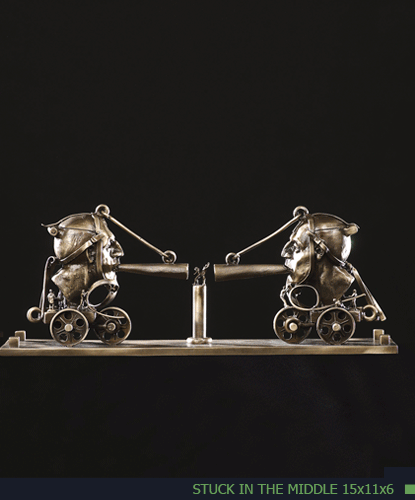

1941
“I intend for my sculpture to be intriguing, both visually and psychologically, to draw your imagination into the pieces themselves, allowing you to come to your own conclusions.”
Theodore T. Gall began his career in the arts in the mid-sixties as an animator for teaching films and continued to broaden his skills as a graphic designer. Gall has worked in metal since his early days as an artist. Although his work has not been limited to the human form, it has been his primary focus throughout his career. His compelling figures are most often placed in thought-provoking situations. He studied at the Art Institute of Chicago and the American Academy of Art and has shared his expertise with students at the Clay People in Chicago, The Northshore Art League in Winnetka, Illinois, and the Ojai Art Center in Ojai, California. He has served as a consultant to the Art Institute and to the Illinois Arts Council. Gall has exhibited and garnered awards throughout the country and is acquiring a burgeoning international clientele.
Theodore Gall’s work is lost wax cast into bronze, aluminum, stainless steel, or welded Corten steel. Many of the larger works are produced in editions of seven or ten while the smaller pieces are one of a kind. While a concept may be repeated many times, each sculpture is unique.
What do you find as you open a Ted Gall sculpture? Masks behind masks? Realities behind appearances? Inner workings? Inner Play? Always something more.
“My concepts come to me visually; it is only during the course of creating a sculpture that its meaning becomes clear. While I am always happy to share what a piece means to me, it is important that interpretation of my work not be limited to my own view. What I have to offer the viewer of my work is not only visual and tactile; equally important are the feelings and emotions that my sculpture can evoke.
My sculpture is my depth. While the act of sculpting helps me work through difficulties and solve problems in my personal life, it is often the finished piece that goes a step further in helping me identify obstacles with which I was not in touch. My career as a sculptor is very satisfying to me—and it is most gratifying when I know that my work has touched someone in a very deep place.”
What began for sculptor Ted Gall in the early nineties as a series of fantasy hats has evolved into an extensive selection of heads with a variety of human and animal masks. Inside each head an elaborate and unique scene is depicted. All heads are articulated, some opening once – most opening twice. Each has a theme. The idea is to open the hinged sections to get inside the head. Once inside, the viewer will discover that the theme is a continuation of all the detail on the outside—truly a thinking person’s sculpture. Although some components such as the head itself or the animal masks are used repeatedly, each sculpture is individually fabricated and the internal works are unique. Ted’s sculptures are signed originals—not editions.